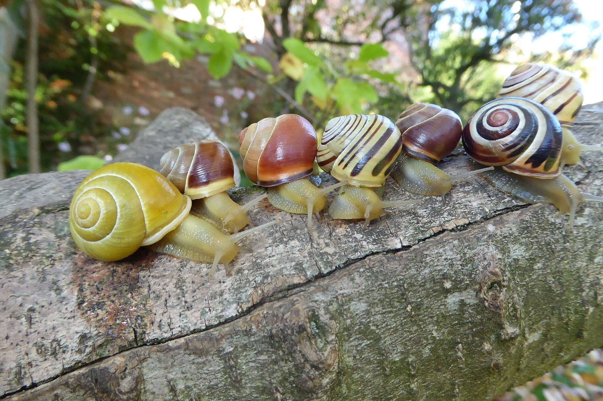
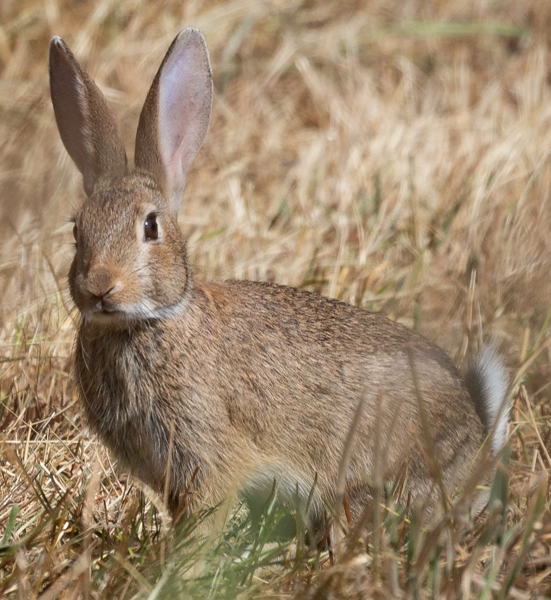

Year 9 Science · Lesson 7
Variation
Same species, all different
Grove snails, one species. Angus Davison. CC BY-SA 4.0

Starter
Everyone in this room is Homo sapiens
So why does nobody look the same? List five ways people in this class differ.
Which of your differences could you measure with a number? Which fall into groups?
Key word · Lab manual p12
Variation
Variation is the differences between individuals of the same species.
The snails on the title slide are all one species, Cepaea nemoralis. Shell colour and banding vary from snail to snail.
Much of this variation comes from differences in genes, passed down from parents. That's why variation matters so much for natural selection next lesson.
Two kinds
Groups or a smooth range?
Controlled by just a few genes. Draw a bar graph.
Controlled by many genes, plus your environment: food, sleep, health. Draw a histogram.
Lab manual p12
Collect the class data
- Measure your height in cm. Shoes off, back against the wall.
- Measure your hand length in cm: tip of the middle finger to the crease of the wrist.
- Note your eye colour.
- Add your results to the class data, then complete both tally tables.
Measure twice. If the two readings differ, measure a third time.
Groups → bar graph
Eye colour
Gaps between the bars: each bar is a separate group.
Groups go along the bottom. Number of students up the side.
Example data, not our class.
A range → histogram
Height
No gaps: the ranges join on to each other.
Most people are near the middle; few are very short or very tall.
Example data, not our class.
Practise reading data
Use the height histogram
- Which height range is the most common? 150–159 cm, 11 students.
- Which ranges are the least common? Under 140 cm and 170 cm and over, 2 students each.
- How many students are 160 cm or taller? 7 + 2 = 9.
- How many students are in the class? 2 + 6 + 11 + 7 + 2 = 28.
In a test, always quote the numbers from the graph, with units.
Lab manual p12 to p13
Questions
- Which feature showed the most variation in our class?
- Eye colour falls into clear groups, but height does not. Why do you think this is?
- Why is variation within a species important for its survival if the environment changes?
Then draw your bar graph of eye colour and your histogram of height on p13.
Why it matters
Rabbits in Australia
In 1950 scientists released a virus to control Australia's rabbit plague. At first it killed more than 99% of the rabbits it infected.
But rabbits varied. A few had genes that helped them survive the virus.
Those survivors bred, and passed the genes on. Within years, many more rabbits survived it.
If every rabbit had been identical, none would have survived. Variation lets a species survive when its environment changes.

.jpeg){kind=link}
Exit question · Lab manual p13 Q3
Why is variation within a species important for its survival if the environment changes?
Angus Davison. CC BY-SA 4.0
Away today?
Missed this lesson? Catch up here
- Copy the definition of variation, and the two kinds with an example of each.
- Measure your own height and hand length, and note your eye colour. Ask your teacher for the class data.
- Lab manual p12 to p13: fill the tally tables, draw both graphs and answer Q1 to Q3.
- Answer the four questions on slide 8 using the example histogram.